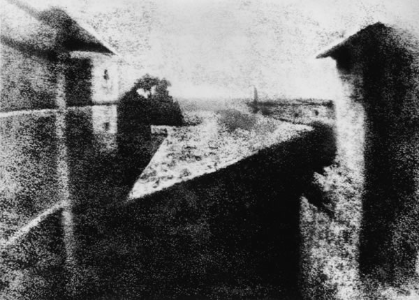
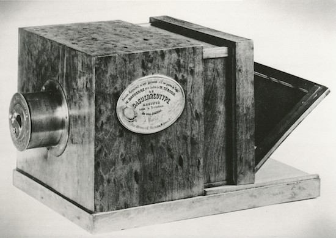
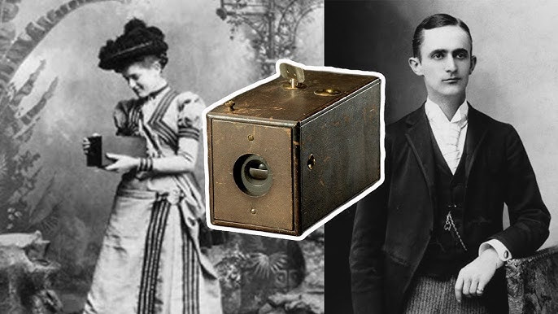
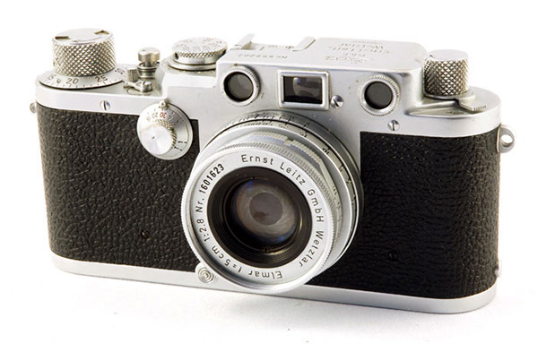
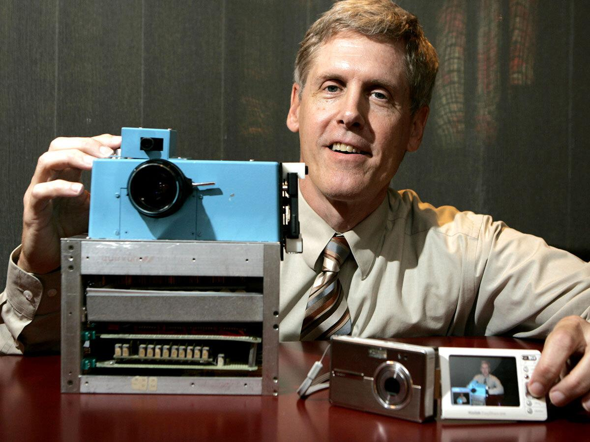
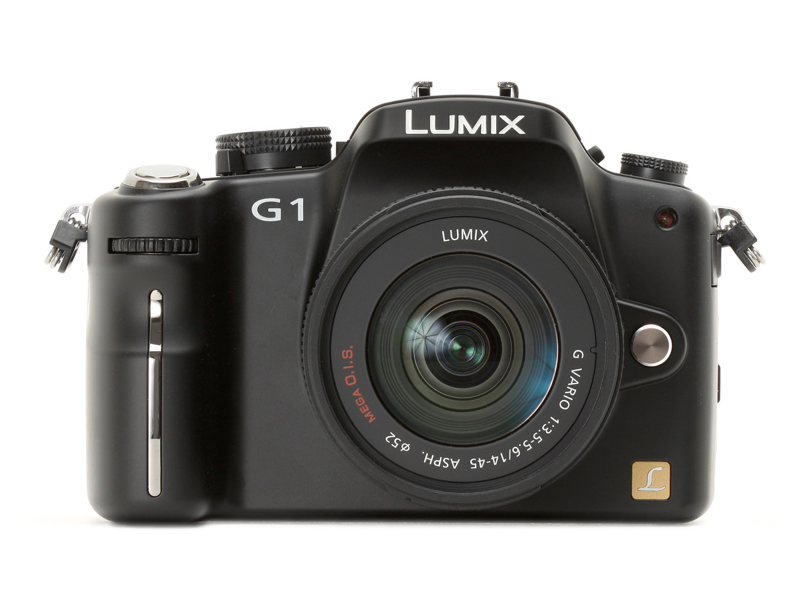

Photography didn’t just appear overnight. It grew step by step, with pioneers pushing the boundaries of what was possible. Each invention not only changed how we capture the world but also shaped how we see it.
Nicéphore Niépce creates the first permanent photograph using a camera obscura.

Louis Daguerre introduces the daguerreotype process, marking the birth of practical photography.

George Eastman launches the Kodak camera, making photography accessible to the public.

The Leica I becomes the first commercially successful 35mm camera, revolutionizing photography.

Kodak engineer Steven Sasson builds the first digital camera prototype.

Panasonic introduces the Lumix G1, the world’s first mirrorless interchangeable lens camera.
